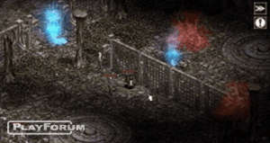
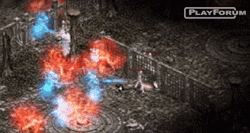
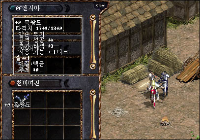
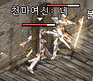
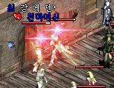
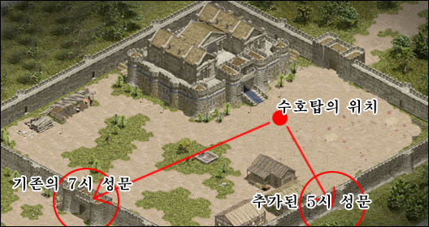

| 2004年2月14日 傲慢塔91F - 100級玩家才能生存？
來源：Lineage
Playforum
英文翻譯：Lineage
Center
傲塔91F是不可能的任務？假如那裡都是會秒殺人的怪物，有人還會去冒險嗎？
在韓國Einhasad伺服器有超高等級的隊伍試圖征服傲塔91F，當中還包括數名70級以上的騎士，結果：

Playforum記者的角色有550血，他按下了傳送卷軸數秒後，侏儒的死亡聲音便出現了。
另外55級妖精ElfSmileQueen及65級的YNoPermanencey在按了卷軸後亦被秒殺。

其後其他玩家都被元素精靈一擊死，包括70+級的騎士。
幸運的生還者嘗試跑到92F，可惜的是在門口便被殺掉了。
他們花了整天的時間去準備前往99F，在一瞬間便化為烏有。
+9暗黑雙刀的測試
來源：Lineage
Playforum
英文翻譯：Lineage
Center

在韓國伺服器有人衝到了+9的暗黑雙刀，當然要測試一番：
1. 黑妖本身是力敏型，52級，升級獎勵點數都加在力量。
2. 黑妖使用了暗影閃避、破壞盔甲、燃燒鬥志、暗影之牙、體魄及通暢魔法
3. 騎士是63級，使用+9瑟劍，+8防具
4. 騎士及黑妖都使用了所有狀態加強魔法。
不使用藥水，左面是黑妖，右面是騎士：

使用紅水，左面是黑妖，右面是騎士：

新城門對守方不利
來源：Lineage
Playforum
英文翻譯：Lineage
Center

在韓國測試伺服器上，風木及肯特城堡都加多了一面城門，玩家發覺5點鐘方向的城門較原本的城門接近守護者之塔，距離幾乎是原本的一本，這對防禦的一方會有大大不利。
美國測試伺服器2月12日更新內容
來源：美國天堂官方網公告
1. 修正了鍵盤相關問題。
2. 加入了雪人(15級)、巨人(15級)、牛人()、思克巴(40級)及小惡魔(45級)的變身選項。
3. 果凍怪的變身將會有裝備限制。
4. 現在可以在道具欄刪除可堆疊及多於一個道具。
韓國測試伺服器2月11日更新內容
來源：韓國天堂官方網站公告
英文翻譯：Lineage
Center
1.
在2月11日下午1時至2月16日上午10時會有情人節活動，商人會售賣情人節卡片及朱古力。在活動期間一些怪物會掉下心靈戒指，玩家可以送它給心弦的玩家。
2. 魔法骰子改為可以掉下。
3. 修正了部分地圖及文字錯誤 |